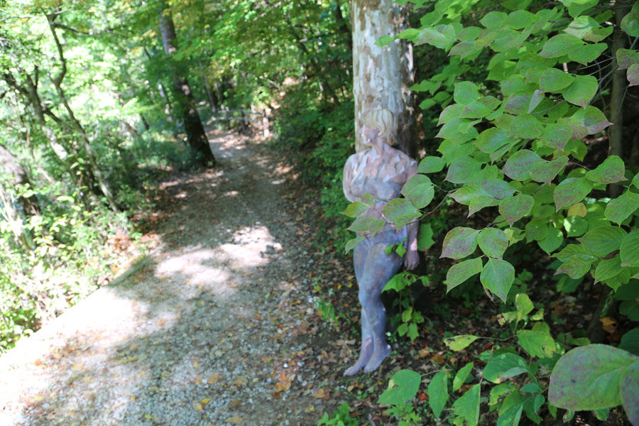
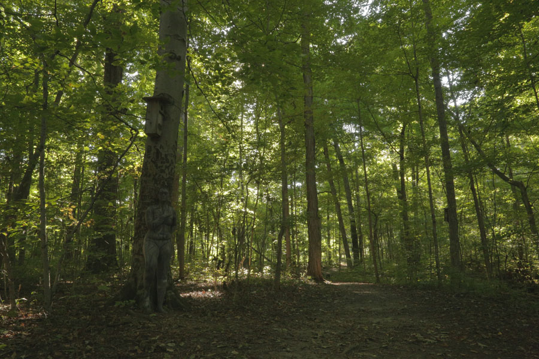
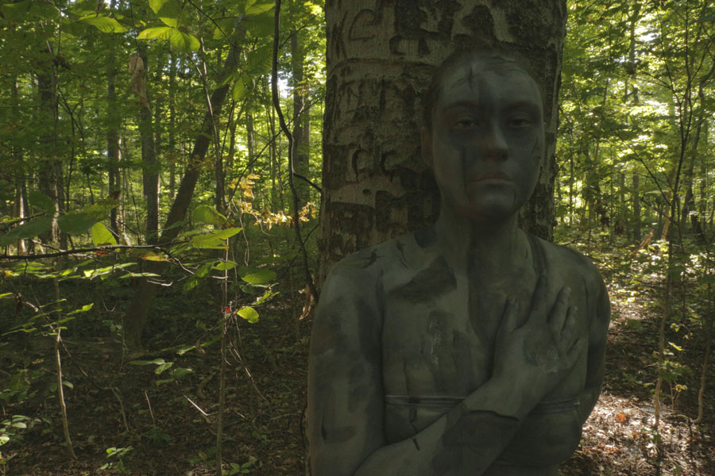
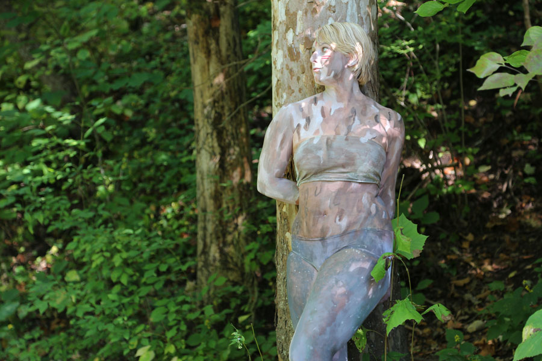

Mounds State Park Body Painting
A creative expression of site
This project was a studio assignment to address site through a physical installation. Mounds State Park was the site in focus, and we spent time getting familiar with the history and qualities of the site before choosing our projects. I felt compelled by the trees as I explored the site, particularly the sycamore and beechwood. I immediately decided to tackle two full body paints in an effort to address the concern that people are losing their connection to nature.


Furthermore, the trees chosen to mimic in the camouflage paintings were of special significance on the site. The sycamore was historically used by Native Americans to carve out canoes. Their location adjacent to rivers made this an incredibly convenient tree to use.
The beech tree that I chose, in contrast, is in a high-traffic area of the woods. Its soft and smooth bark makes it succeptible for humans to carve into it. What people deem to be a romantic gesture of carving their names into the trunk is actually incredibly destructive to the tree.
The contrast between the two trees speaks highly of the impact that people have had on Mounds State Park, and I hope that my creative expression alludes to my desire for people to fully experience and appreciate nature without destroying it.
